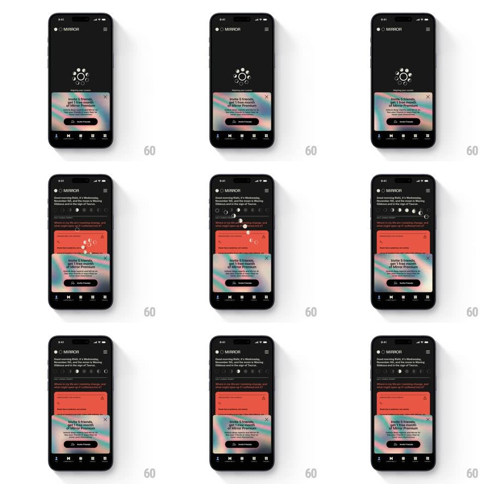

Media
Frame-by-frame

Rebuild this animation 1:1: Mirror's invite sheet - while the feed loads behind a spinner, the invite card rises with a fluid holographic gradient background that keeps flowing over the loaded feed.

Rebuild this animation 1:1: Mirror's invite sheet - while the feed loads behind a spinner, the invite card rises with a fluid holographic gradient background that keeps flowing over the loaded feed.
## Integration
Integration: stack-agnostic spec - springs given as stiffness/damping, timed motions as duration + curve; map every value to your framework and animation library of choice.
## Scene
Mirror's dark home: first a loading state (rotating dotted ring, "Aligning your stars..."), then the morning feed - "Good morning Rishi, It's Wednesday, November 5th..." with a moon-phase icon row and a coral insight card. Persistent above the tab bar: an invite card with a fluid gradient face (pink, teal, cream swirl), "Invite 5 friends get 1 free month of Mirror Premium", a dark "Invite Friends" button, and a close X.
## Motion spec
Pattern: fluid gradient invite card riding over the loading-to-feed transition.
- The loading ring rotates (1.4s loop) center screen while the invite card is already docked at the bottom - the card does not wait for the feed.
- The card's gradient flows continuously: a slow liquid swirl (pink to teal to cream) circulating inside the card bounds (~10s cycle), edges feathered soft - alive but never busy.
- When the feed is ready, the spinner fades (250ms) and the feed content rises in staggered: greeting text first, moon-phase row second (icons pop in 40ms apart), the coral card last (20px rise, 300ms) - the invite card stays put through the whole swap.
- The moon-phase row fills left to right as it appears, each glyph cross-fading from outline to filled.
- Tapping X dismisses the invite card with a slide-down (280ms, ease-in); the feed never reshuffles behind it.
## Calibration
- The gradient is the card's constant - it must keep moving while everything around it changes state.
- The card overlaps content without a scrim - it floats on the feed, not over a dimmed layer.
## Reduced motion
Gradient holds a static pastel blend; feed fades in without stagger.
## Don't miss
- The offer copy leads with the reward math ("Invite 5 friends, get 1 free month") - the gradient draws the eye, the copy closes it.
- The dark Invite Friends button inside the bright card mirrors the dark screen - the card wears the app inside out.